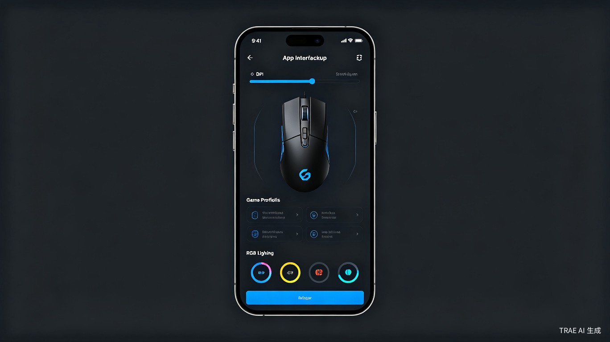

1创意介绍
想解决什么问题
不同游戏需要不同的鼠标参数配置，而各厂商驱动软件互不兼容，导致玩家换设备或去网吧时无法快速恢复熟悉的操作手感，严重影响竞技表现。
为什么会想到做这个
作为一名 FPS 游戏爱好者，我经常遇到这样的困扰：在家精心调校好的 DPI、回报率、按键宏等参数，到了网吧或朋友家就全部归零。每次换一台电脑都要重新安装对应厂商的驱动、重新调参，耗时且无法精确还原。市面上没有一款产品能够统一管理多品牌鼠标配置并支持移动端随时调用，这正是我打造 MouseSync 的初衷。
大概是什么产品
MouseSync 是一款面向游戏玩家的 跨平台鼠标配置管理软件（支持 Windows / macOS / 移动端 App），通过对接主流鼠标厂商的开放接口或驱动协议，实现配置参数的云端存储、一键导入官方驱动、以及手机端随时查看和切换游戏配置。

2目标用户及痛点
面向哪些用户
硬核 FPS / MOBA 玩家
对鼠标参数极度敏感，不同英雄/枪械需要不同的 DPI 与按键方案。
电竞选手与陪练
频繁在不同训练场地切换设备，需要保证手感一致性。
网吧常客
自带鼠标去网吧，却受限于网吧系统无法安装官方驱动的群体。
多设备游戏用户
同时拥有台式机、笔记本、游戏本，希望配置无缝同步。
在什么场景下使用
- 赛前准备：到达比赛场地后，用手机一键将熟悉的配置推送到当前电脑
- 网吧游戏：无需安装臃肿的官方驱动，扫码即可应用个人配置
- 换鼠标时：购买新品牌鼠标后，自动将旧设备的配置映射到新设备
- 多游戏切换：从《CS2》切换到《Apex英雄》，自动加载对应的 DPI 和宏方案
当前痛点
| 痛点场景 | 现状 | 带来的问题 |
|---|---|---|
| 换电脑/去网吧 | 需重新安装对应厂商驱动 | 网吧系统限制安装，耗时 10-30 分钟 |
| 多品牌鼠标 | 各厂商驱动互不兼容 | 配置无法迁移，换品牌等于从零开始 |
| 多游戏管理 | 驱动内配置项混乱 | 找不到对应游戏的配置，误操作风险高 |
| 参数记忆 | 靠截图或记事本记录 | 容易丢失，无法精确还原手感 |
3价值与意义
商业价值
游戏外设市场持续增长，而配置管理工具仍是空白赛道。MouseSync 可通过增值服务（高级云存储、专业选手配置包、厂商合作推广）实现商业化，同时作为流量入口连接外设电商与游戏社区。
效率提升
- 配置恢复时间：从 15 分钟缩短至 30 秒，提升 30 倍效率
- 跨品牌迁移：首次实现不同厂商鼠标配置的自动映射与转换
- 移动端管理：无需打开电脑，手机即可查看、编辑、分享配置
- 社区共享：玩家可分享和下载职业选手/高玩的配置方案
社会价值
降低电竞玩家的设备使用门槛，让更多普通玩家享受专业级的设备调校体验。通过配置共享社区，促进玩家之间的技术交流与成长，推动电竞文化的普及与发展。
4核心功能架构
云端配置库
支持多设备同步，配置永不丢失。可按游戏、场景、设备分类管理。
厂商驱动对接
集成罗技 G HUB、雷蛇 Synapse、赛睿 GG 等主流驱动的导入/导出接口。
一键导入导出
扫描 QR 码即可将手机上的配置推送到当前电脑，无需手动安装驱动。
游戏自动识别
检测到游戏启动时，自动切换至对应配置方案，退出后恢复默认。
参数智能映射
换品牌时自动换算 DPI 曲线、按键功能，最大限度保留原有手感。
社区配置市场
浏览、下载高玩分享的配置方案，也可分享自己的配置获得收益。
5技术实现路径
桌面端
基于 Electron / Tauri 开发跨平台客户端，通过调用厂商 SDK 或模拟驱动配置文件的方式实现参数写入。对于未开放接口的厂商，采用配置文件逆向解析方案。
移动端
使用 Flutter / React Native 构建 iOS & Android App，主要提供配置查看、编辑、扫码推送功能，与桌面端通过 WebSocket / 云端同步。
云端服务
基于 Node.js / Go 构建配置存储与同步服务，采用端到端加密确保用户配置数据隐私安全。